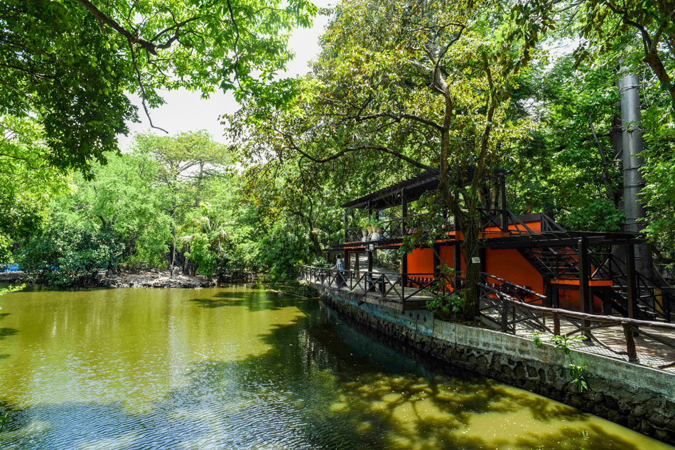

The Manila Zoo is a 5.5-hectare zoo in Malate, Manila, Philippines. Previously, it was known as the Manila Zoological and Botanical Garden. On July 25, 1959, Manila Mayor Arsenio Lacson opened the Manila Zoological and Botanical Garden to the public for the first time. The zoo, which is also known as Manila Zoo, was built over the course of a year at a cost of more than one million yen. Leonila Garcia, First Lady, attended its inauguration.
Manila Zoo is a 5.5-hectare zoo located in the heart of Manila, Philippines. Here are some of the things that make Manila Zoo special:
Animal Collection: Manila Zoo is home to a diverse collection of animals, including native and exotic species. Visitors can see animals such as elephants, tigers, lions, zebras, giraffes, and many more.
Educational Programs: The zoo offers educational programs that aim to promote awareness and conservation of wildlife. These programs include guided tours, lectures, and interactive activities that help visitors learn about the animals and their natural habitats.
Location: Manila Zoo is located in the heart of Manila and is easily accessible from other parts of the city. It is situated in the same area as several other popular tourist attractions, such as Rizal Park and the Cultural Center of the Philippines.
Historical Significance: Manila Zoo is one of the oldest zoos in Asia, with a history that dates back to 1959. It has played an important role in the education and conservation of wildlife in the Philippines and has become a beloved landmark in the city.
Recreational Activities: The zoo offers a range of recreational activities for visitors, including picnics, train rides, and playgrounds for children. It also has several restaurants and snack bars where visitors can enjoy a meal or a snack.
Overall, Manila Zoo is a special place that offers visitors the chance to see and learn about a diverse range of animals while enjoying recreational activities in a historic and accessible location. Its educational programs, animal collection, and historical significance make it a must-visit destination for animal lovers and families visiting Manila. However, it is worth noting that the zoo has faced criticisms and concerns about the welfare of the animals, and visitors should consider these before deciding to visit.